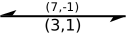

Der Cycle Cancelling Algorithmus
Der Cycle Cancelling Algorithmus
 Der Cycle Cancelling Algorithmus
Der Cycle Cancelling Algorithmus
Der kostenminimale Fluss nutzt nicht die teure Kante mit Kosten 3.
Die Planung von Straßennetzen, Pipelines or Datennetzwerken sind die Motivation für die Flussprobleme genannte Klasse von Optimierungsproblem. Der charakterisierende Aspekt der zu planenden Netzwerke ist, dass eine Art Ressource durch die Kanten eines Netzwerks transportiert werden muss, welche jedoch nur eine bestimmte Menge an Fluss zulassen. Für manche der Optimierungsprobleme haben diese Transportkanten noch weitere Eigenschaften, welche es zum Beispiel motivieren, den Kanten Kosten zuzuweisen - beispielsweise Mautgebühren für die Nutzung von Straßen.
In solch einer Problemstellung ist es interessant, wie ein bestimmter Fluss mit minimalen Kosten durch das Netzwerk geschickt werden kann. Diese Problem wird das Min-Cost Flow Problem genannt.
| Knoten | |
| S/T Knoten | |
| Kante mit Fluss 7, Kapazität 10 und Kosten 1 | |
|  | Kante im Residualnetzwerk, Kosten 1 |
| Kante auf negativem Kreis, Kosten 1 |
Klicken Sie bitte auf einen Knoten in dem Netzwerk, um ihn als Quelle/Startknoten auszuwählen. Der Fluss geht von diesem Knoten aus. Dieser Knoten hat keinen reinfließenden Fluss und den rausfließenden Fluss ist gleich der Flussstärke.
Klicken Sie bitte auf einen Knoten in dem Netzwerk, um ihn als Senke/Zielknoten auszuwählen. Der Fluss endet in diesem Knoten. Der reinfließende Fluss dieses Knotens ist gleich die Flussstärke und es gibt keinen rausfließenden Fluss.
Der Algorithmus kann nun starten. Klicken Sie bitte auf Nächster Schritt, um ihn zu starten.
Der Algorithmus berechnet den maximalen Fluss mithilfe von Edmonds-Karp-Algorithmus, der eine Implementierung der Ford-Fulkerson-Methode ist, ohne die Kantenkosten zu berücksichtigen.
Der Algorithmus funktioniert wie folgt:
Solange es im Residualnetzwerk einen Weg von dem Quellknoten zur Senke gibt, mit Kapazität auf allen Kanten im Weg, sendet der Algorithmus so viel Flusseinheiten über dem kürzesten Weg, bis die Kante mit der kleinsten Kapazität saturiert wird. Der kürzeste Weg wird mithilfe von Breitensuche gefunden. Der Algorithmus wiederholt diese Schritte, bis es keinen Augmentationspfad (Pfad mit positiver Kapazität) von zu mehr gibt.
Detailierter Beschreibung der Ford-Fulkerson-Methode und Initialisierung von maximalen Flüssen ist hier zu finden.
Wenn der Algorithmus den maximalen Fluss gefunden hat, erstellt er der Residualgraph zu diesem Fluss wie folgt:
Jede Kante wird durch zwei neue Kanten und ersetzt.
Die Kante hat Kosten und Restkapazität ,wobei ist die Kapazität der Kante und der Fluss durch die Kante.
Die zweite (Rückwärts-)Kante hat Kosten und Restkapazität .
Die Hauptschleife sucht in jeder Iteration nach negativen Kreisen (d.h. nach Kreisen, deren Gesamtgewicht negativ ist) im Residualgraph.
Falls kein negativer Kreis gefunden wird, terminiert der Algorithmus.
Man findet in dem Residualgraph negativen Kreisen, indem man den Bellman-Ford-Algorithmus wie folgt ausführt:
Wenn die Anzahl der Knoten in dem Graph ist, wird der Algorithmus zuerst mal ausgeführt und sollte den kürzesten Weg von nach gefunden haben. Dann wird der Algorithmus noch einmal ausgeführt und wenn der kürzeste Weg, der in der -ten Ausführung gefunden wurde, sich nicht verändert hat, gibt es keinen negativen Kreis. Andernfalls nimmt der Algorithmus einen Knoten, dessen Abstand sich geändert hat, und geht von ihm über seine Vorgänger, bis einen Kreis gefunden wird. ist der gesuchte negative Kreis.
Weitere Informationen zum Bellman-Ford-Algorithmus findet man hier.
Wenn der Algorithmus einen negativen Kreis findet, augmentiert er Floweinheiten durch den Kreis , um die Kante mit minimalen Restkapazität zu saturieren (d.h. mit Fluss ausfüllen), sodass der negative Kreis aus dem Residualgraph entfernt wird.
Dann geht der Algorithmus zurück zur Hauptschleife, um den Residualgraph für andere negative Kreise zu überprüfen.
Der Algorithmus terminiert mit maximalem Fluss von:
-
und minimalen Kosten für diesen Fluss:-
Der Residualgraph enthält keine negativen Kreise, daher wird ein Min-Cost-Flow gefunden.
s ← wähle(v)
t ← wähle(v)
BEGIN
|
| (* Initialisiere max. Fluss *)
| BERECHNE MAX FLOW IM NETZWERK
| MIT FORD-FULKERSON-ALGORITHMUS
|
| (* Hauptschleife *)
| WHILE (dem Residualnetzwerk einen
| | negativen Kreis besitzt) DO
| |
| | FÜHRE BELLMAN-FORD-ALGORITHMUS AUS
| | UM NEGATIVE KREISE ZU
| | IDENTIFIZIEREN;
| | IF (negativer Kreis gefunden)THEN
| | | IDENTIFIZIERE Kreiskanten
| | |
| | |
| | ENDIF
| | FOR ( )
| | |
| | ENDFOR
| |
| ENDWHILE
|
END
| Kreis | Anpassung |
|---|---|
| - | - |
Du kannst die Anwendung in einem anderen Browserfenster öffnen, um parallel einen anderen Tab zu lesen.
| Node | |
| Source node | |
| Target node | |
| Edge in residual graph, cost 1 | |
| Edge on negative cycle, cost 1 |
s ← pick(v)
t ← pick(v)
BEGIN
|
| (* Initialize max flow *)
| CALCULATE MAX FLOW IN THE NETWORK
| USING THE FORD-FULKERSON ALGORITHM
|
| (* Main Loop *)
| WHILE (the residual network
| | contans a negative cycle) DO
| |
| | EXECUTE BELLMAN-FORD ALGORITHM TO
| | IDENTIFY A NEGATIVE CYCLE ;
| | IF (negative cycle exists)THEN
| | | IDENTIFY cycle-edges
| | |
| | ENDIF
| | FOR (
| | |
| | ENDFOR
| |
| ENDWHILE
|
END
The algorithm will be executed normally, but will stop in a few places. Then you will have to predict, what the algorithm would do next.
Hint: Recall the description of the algorithm.
You can open another browser window to read the description in parallel.
| Knoten | |
| S/T Knoten | |
| Kante mit Kapazität 10 und Fluss 7. | |
| Kante im Residualgraphen. | |
 |
Kante auf augmentierendem Pfad. |
In the following exercise you will get different networks \(N\) with the respective capacities, flow values and costs \(u(e)\), \(f(e)\) and \(c(e)\) for all edges \(e \in E\), based on a current flow \(f\).
Your task is to fill the missing residual capacities \(r(e')\) bzw. \(r(e'')\) of the out- and ingoing edges \(e'\) und \(e''\) in the corresponding residual network .
You will get a network with current flow. Your task is to fill out the missing residual capacities and costs in the residual network!
Tip: Before you start read the information on residual networks again.
WARNING!
You can set the missing residual capacities and costs only once. When a value is set it can not be changed any more.
Good Luck!
You can open another browser window to read another tab in parallel.